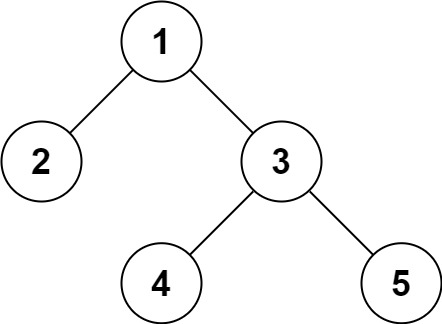

| Category | Difficulty | Likes | Dislikes |
|---|---|---|---|
| Algorithms | Hard | 10979 | 430 |
string | tree | depth-first-search | breadth-first-search | design | binary-tree
microsoft | google | amazon | linkedin | tiktok | facebook | nutanix | uber | apple | citadel | oracle | quora | hive | tcs | doordash | adobe | nvidia | bloomberg | qualcomm | yahoo
Serialization is the process of converting a data structure or object into a sequence of bits so that it can be stored in a file or memory buffer, or transmitted across a network connection link to be reconstructed later in the same or another computer environment.
Design an algorithm to serialize and deserialize a binary tree. There is no restriction on how your serialization/deserialization algorithm should work. You just need to ensure that a binary tree can be serialized to a string and this string can be deserialized to the original tree structure.
Clarification: The input/output format is the same as how LeetCode serializes a binary tree. You do not necessarily need to follow this format, so please be creative and come up with different approaches yourself.
Example 1:

Input: root = [1,2,3,null,null,4,5]
Output: [1,2,3,null,null,4,5]Example 2:
Input: root = []
Output: []
Constraints:
[0, 104].-1000 <= Node.val <= 1000